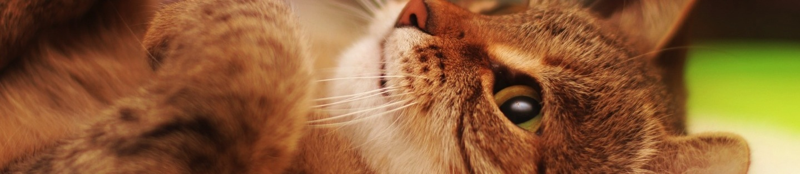
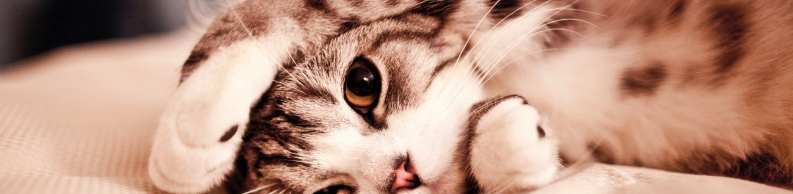
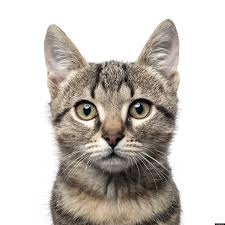
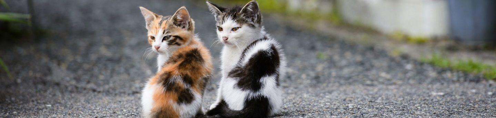

Hello, fellow American. This, you should donate to me! I leave money! Good. Thank you. Thank you. If you donate me, I'm hot. Mittons! They'll be freer! Yes. The finance vote for me mittons is the right thing to do, America, so do. Yep. Do it. So do it. Cats hour noisy and kittens hour Evan noiser. So gift money. Cats happy. I am very success and smart. Thank you. Charity is transparency and the right to do. Thanks. Mittons! Let's hand out these Mittons. Smitten! You'll be. So be, America. Call for questions. Email for financical. Button beneath for money. Send it! The crazy cats went the mittons.

Information
Our goal at Kitten Mittons isn't to sell you mittons for your kitten. Weird, right? WELL.. we've already done that! Do you remember these words....
Hello, Charlie Day here, local business owner and cat enthusiast. Is your cat making too much noise all the time? Is your cat constantly stomping around driving you crazy? Is your cat clawing at your furniture? Think there's no answer? You're so stupid! There is! Kitten Mittons. Finally, there is an elegant, comfortable mitton for cats! Is your cat one-legged? Is your cat fat, skinny, or an in-between? That doesn't matter! Cause one size fits all! Kitten Mittons! You'll be smitten!
After making over a billion dollars selling mittons to pet-parents who had noisy kittens, our President, Charlie Day, looked within his heart and thought.. "but what about those kittens who can't afford our mittons?". After this sad thought, Charlie realized that he needed to use his very successful life to help others. AND YOU CAN TOO!!
Donate right now! Just $17 provides 1 cat with a set of kitten mittons! That's all! Why not donate $85 and help 5 kittens? Do you buy coffee everyday? Do you aimlessly online shop in order to replace the feelings of abandonment you have from your childhood? Use that money for good instead!! Donate money to us and we'll make sure that kittens get their mittons!

Personal Story

Hi- I'm Whiskers McMeowerson and my life has been drastically changed because of Kitten Mittons. This charity is doing God's work!!!! I was a kitten who was severely down on her luck, all due to my noisy paws. No owner would let me stay once they realized how noisy my paws were and I was kicked out of every shelter for annoying all the other animals with my ruckus causing feets! I was lonely, sad and incredibly insecure. I heard all about Kitten Mittons years ago when they became an instant sensation but I could barely afford my canned tuna.. how could I spend my whole life savings on a beautiful pair of hand knitted* mittons just to make myself happy? It seemed frivilous. But lucky for me... Charlie Day is a true saint! He decided to start giving away Kitten Mittons** to those in need and I was lucky enough to qualify! My destitude has finally paid off! Thanks to my awesome pair of Kitten Mittons, my paws are so quiet that I can easily sneak up on my new owners which brings me great joy. Oh yeah, I HAVE OWNERS! I am so happy and none of this would have been possible without Kitten Mittons
THANK YOU KITTEN MITTONS- YOU ARE CHANGING LIVES!
*Kitton Mittons are made in China using assembly machines, which we lovingly nicknamed "Hand" so we are not liable when we say that are hand knitted.
**Charlie Day does not donate any Kitten Mittons himself, he needs his money for his stuff. Kitten Mittons are able to be given away due to donations by the public. Charlie Day is still a saint.
Be sure to click our "Gallery" button at the top of the page to see other cats we've helped and celebrities who are helping us to help these noisy felines!
